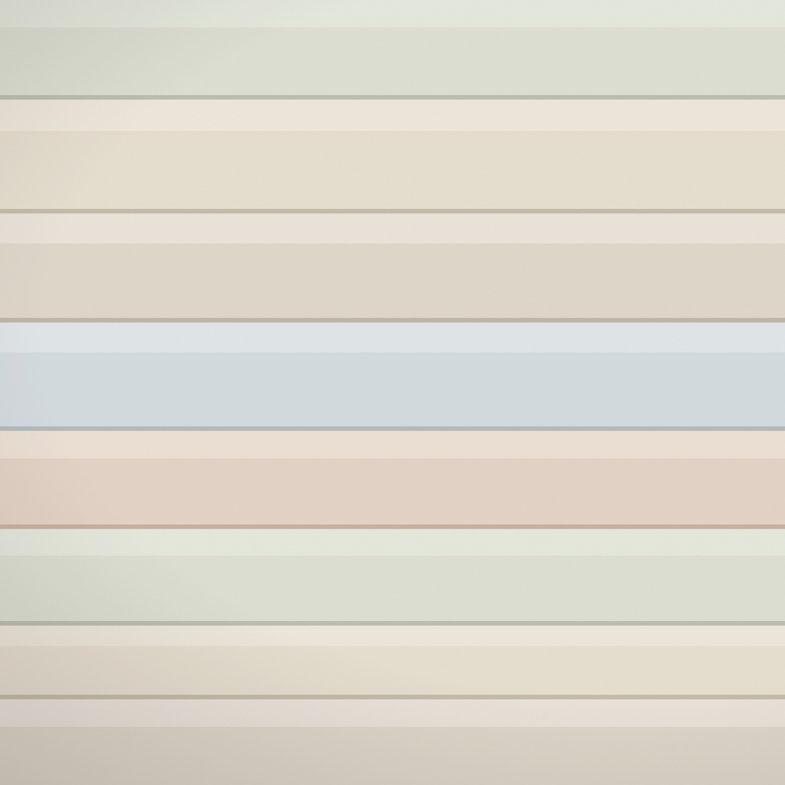

Design guidance for custom window treatments, upholstery, and soft furnishings.
Every service below starts with the same question: what should this room feel like when it is finished? Amy works with you from fabric selection through fabrication and installation, in homes across Cincinnati and Northern Kentucky.

Six ways to work together
Some clients come with a single window that has never felt right. Others want drapery, shades, and soft furnishings considered across the whole house. Both are welcome here.
Whatever the starting point, the details are treated as design decisions, not order-form checkboxes.
Custom Drapery
Custom drapery designed around the room, the architecture, and the way the space should feel, with thoughtful attention to fabric, lining, proportion, hardware, and installation.
Blinds & Shades
Beautiful, functional blinds and shades selected for privacy, light control, heat, and style, with personal guidance and professional measurement and installation.
Fabric Consultation
Focused guidance for choosing fabrics, colors, patterns, trims, and details that work together in the finished space.
Upholstery
Upholstery and reupholstery that give meaningful furniture new life through the right fabric, scale, and finishing details.
Pillows, Cushions & Soft Furnishings
Custom pillows, cushions, and soft furnishings that add the final layer of color, texture, and personality to a room.
Fabrication & Installation
Technical knowledge is considered from the beginning so treatments are made correctly for the way they will be installed and used.
Not sure which service fits? Start with a conversation.
Based in Cincinnati and Northern Kentucky, available for select travel projects.